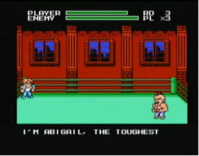
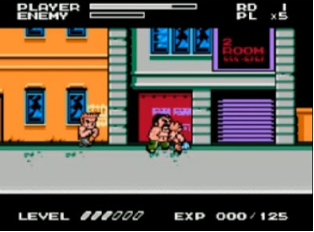
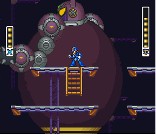
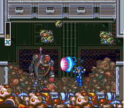
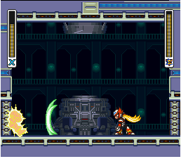

Novidades
Mighty Final Fight (NES)
Muitos achavam que, com o lançamento do Mega Drive em 1988 e do SNES, dois anos depois, o velho Nintendinho estaria com os dias contados, e os dois novos consoles deixariam o NES a ver navios. Felizmente a Nintendo não é como a Sony, que faz ports cada vez mais picotados para manter o PS2 respirando por aparelhos. Ela nunca deixou o console que a fez famosa sem bons jogos, e mesmo com o SNES bombando o console mais velho ainda recebia bons games. Mighty Final Fight é o maior exemplo disso.
Na época, a política monopolista que a empresa tinha com as softhouses fez com que a empresa amarrasse a Capcom à sua órbita. Além de garantir a exclusividade de Street Fighter II no SNES, a empresa também garantiu que seu novo console seria o único a receber Final Fight, outro grande sucesso dos arcades. Porém, além da versão que era quase a mesma do arcade, a Capcom decidiu portar o jogo para o NES.
A princípio o port foi visto com receio, afinal o Nintendinho jamais sonharia em ter gráficos que se comparassem à CPS1, placa de arcade que possibilitava a alta qualidade do game. Sorte que a Capcom sabia disso, e decidiu criar um jogo que do arcade só tinha o enredo (o clássico "resgate a donzela em perigo"), gerando um game totalmente novo. O Final Fight dos arcades era um game "sério", já a versão do NES ganhou um ar mais leve e bem humorado. Os personagens deixaram o estilo bombado e aderiram ao SD (Super Deformed, aquele estilo "desenho animado cabeção" que faz muito sucesso no Japão), e as batalhas contra os chefes ganharam diálogos hilários. Além disso, os personagens ganharam um sistema de experiência que, à medida que você causava fraturas pela cidade, destrava golpes especiais que, além do "chute helicóptero" de todos que drena um pouco do seu life, variam de acordo com o personagem, indo da inútil "corridinha" do Haggar ao poderoso "hadouken" do Cody. Outra coisa que varia aqui é a arma que o jogador pode utilizar durante o jogo: Cody usa facas, Haggar usa uma marreta e Guy lança shurikens (estrelas ninjas).
O desafio do jogo é bem grande, pois enquanto os "inimigos normais" não chegam a ser motivo de preocupação (com exceção daquele maldito militar que fica defendendo!), alguns chefes são de meter medo, como o lutador Abigail, chefe da 3ª fase, que quando atacado pelo solo te agarra para literalmente sugar sua vida e quando atacado com voadoras te pega com um gancho e te manda pro teto do ginásio! Sorte que o jogo te presenteia com fases de bônus, onde você deve quebrar barris que vêm rolando na sua direção e que, além de alguns serem "premiados" com itens, se você quebrar uma boa quantidade ganha um item como um bônus, um continue ou até mesmo vidas extras.
.jpg)
O final do jogo (já mostrado aqui no blog numa Lista Top) é frustrante e bem diferente do original, mas isso não é nada que macule a diversão que ele proporciona. É realmente uma pena que ele tenha sido lançado no fim da vida do NES, mas mesmo assim ele se tornou um dos maiores títulos do console. Uma prova cabal que um console de sucesso pode ter sim bons jogos no fim de sua vida, e que um jogo mais avançado só precisa de uma boa adaptação para rodar em sistemas mais "velhinhos" sem ficar com cara de caça-níqueis barato.
Megaman X2 (SNES)

A continuação do aclamado Megaman X atingiu a maioria dos jogadores de surpresa, porque inicialmente ninguém imaginava que Megaman X seria uma série (sem contar que havia muita gente que achava que o "X" significava "10", como se fosse o décimo game da franquia clássica; na verdade, a série Megaman ainda estava no 6 quando Megaman X foi lançado; Megaman 7, o primeiro da série clássica pro Super Nintendo, foi lançado poucos meses depois de Megaman X2). Megaman X2 foi então o passo seguinte da série X, que viria a conquistar os fãs (para muitos, mais até do que a série clássica).
Em Megaman X2, seis meses se passaram desde o final do game anterior. O vilão Sigma, líder dos Mavericks, foi derrotado mas o preço foi alto para Megaman X e os demais Reploids, já que seu líder Zero também havia sido destruído na batalha. X agora comanda os Maverick Hunters, o grupo de Reploids que caça os Mavericks (pra entender: Reploids são todos os robôs com pensamento independente, criados pelo Dr. Cain com base no Megaman X, que por sua vez foi criado pelo Dr. Light, o criador do Megaman original; Mavericks é como são chamados os Reploids que se rebelaram contra a humanidade). Apesar da derrota de Sigma, ainda existem muitos Mavericks à solta que continuam a rebelião, liderados agora pelos Mavericks Serges, Violen e Agile, que se autodenominam os "X-Hunters". Os X-Hunters conseguiram coletar todas as partes do corpo de Zero, exceto o chip de controle que ainda estava com os Maverick Hunters; eles então resolvem usar os pedaços de Zero como isca para atrair X até sua base secreta no Pólo Norte para poderem acabar de vez com ele. Azar o deles...
Em termos de jogabilidade, Megaman X2 é a sequência perfeita de Megaman X; praticamente não há diferenças entre o primeiro e o segundo game, principalmente na jogabilidade (com excessão do Spin Dash, a "deslizadinha", que no primeiro game só era obtido quando se pegava as botas da armadura, e em X2 o jogador já começa com o movimento; as botas, por sua vez, habilitam usar o Spin Dash no ar). Qualquer um que jogue vai achar que está jogando apenas uma outra parte do primeiro game, já que houveram tão poucas modificações. Não apenas a jogabilidade, mas também os gráficos e os sons estão exatamente do mesmo nível que o primeiro game. Isso é ruim? De jeito nenhum! Como eu disse, mantiveram O NÍVEL, não que fizeram tudo igual!
Conseguiram manter a qualidade do game e inovar ao mesmo tempo, pondo novas habilidades, backups, upgrades e poderes; embora o modo de obtê-la continue o mesmo (através de cápsulas escondidas nas fases), a nova armadura possui habilidades bem distintas da armadura do game anterior (como a capacidade de procurar itens escondidos nas fases), além ainda de ser mais bonita (de fato, os fãs da série X consideram a Giga Armour a mais bonita dos games). Além disso, claro, foi mantido o sistema de chefes com armas, fraquezas e técnicas diferentes (jogo do Megaman sem isso não é jogo do Megaman!); como sempre, são oito robôs, além dos três X-Hunters e o chefe final que eu não vou dizer que é o Sigma, pra variar. Além deles, este é o primeiro game da série em que X acaba tendo que enfrentar seu colega Zero, que inclusive estreia aqui o seu Z-Saber...(ok, chega de spoiler)
As fases estão bem elaboradas, cheias de armadilhas, detalhes escondidos e Easter Eggs, além de belas paisagens de fundo (na fase da água a Capcom aproveitou o cenário do Ending do Ryu de Street Fighter II... ). Porém, comparando novamente com o game anterior, as fases dão a impressão de serem ligeiramente mais curtas. As músicas, por outro lado, não devem nada a ninguém; mantendo o estilo de um rock eletrônico pesadão, que se tornou uma das características da série X (bom para os fãs de Rock).
O único defeito que realmente se pode apontar neste game foi o fato de ele ter trazido poucas mudanças à série; não se pode culpar os produtores, afinal este era apenas o segundo jogo de uma série recém-inaugurada, e que viria para conquistar os fãs do Super Nintendo e do Megaman. Megaman X2 é, repito, apesar dos pesares a sequência ideal.
Ah sim., e por falar em Street Fighter e segredos, boa sorte para os que querem ver Megaman soltando um Shoryuken! Assim como no game anterior, em que era possível encontrar uma cápsula que dava a Megaman o poder do Hadouken, neste foi colocado o Shoryuken. Só é pena que não continuaram com isso e Megaman X3 ficou sem referências a Street Fighter (podiam pelo menos ter colocado o Tatsumaki Senpukyaku, sei lá...).